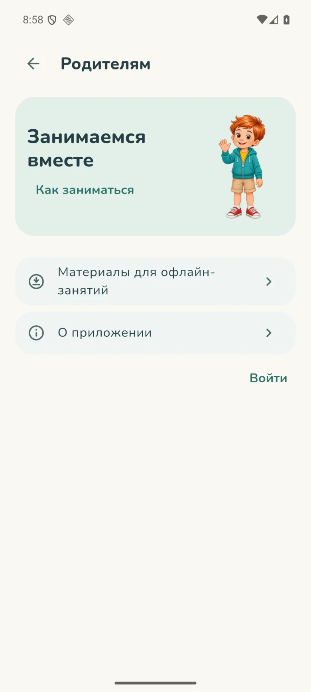
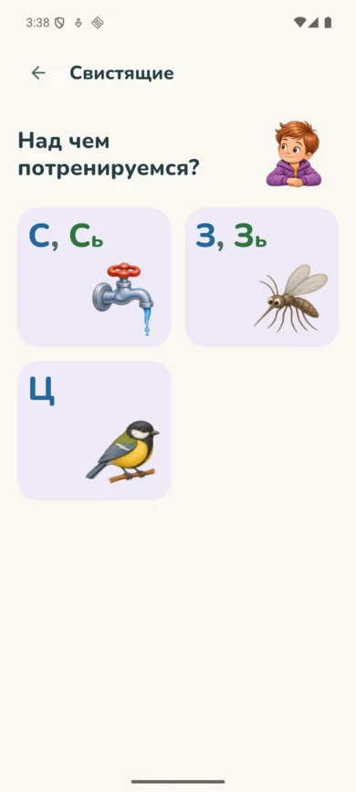
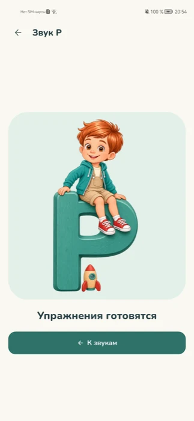
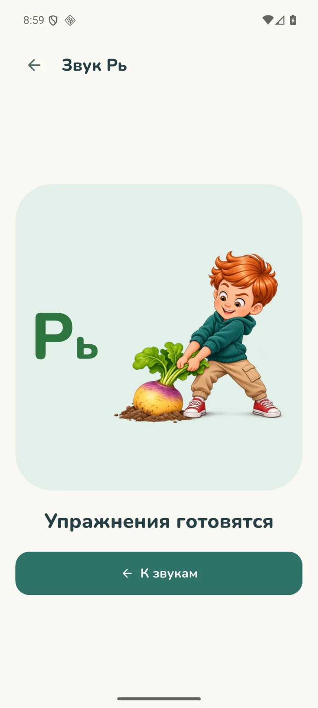

Свистящие
С, Сь, З, Зь, Ц
Речевая практика дома, 4–7 лет
Готовим упражнения для домашней практики по рекомендациям логопеда.
Приложение для Android в разработке.

С, Сь, З, Зь, Ц
Ш, Ж, Ч, Щ
Р, Рь, Л, Ль
Движения языка и губ






Специалист подбирает материал. Родитель помогает ребёнку выполнять задания дома.
Четыре направления и выбор звука доступны без входа. В разделе «Родителям» есть памятка, управление скачанными материалами и вход через VK ID. Упражнения готовятся.
Далее — упражнения с картинками и озвучкой, запись и прослушивание голоса.
Предложения и замечания — в публичных GitHub Issues. Не указывайте личные данные ребёнка.
Написать на GitHubВ RuStore ещё не опубликовано. Оплаты на сайте нет.